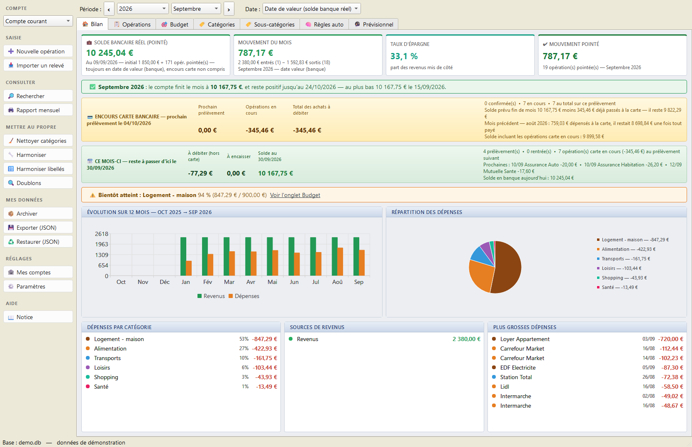
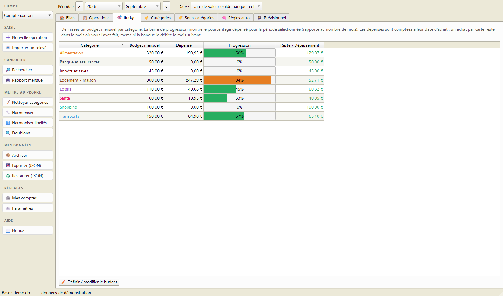
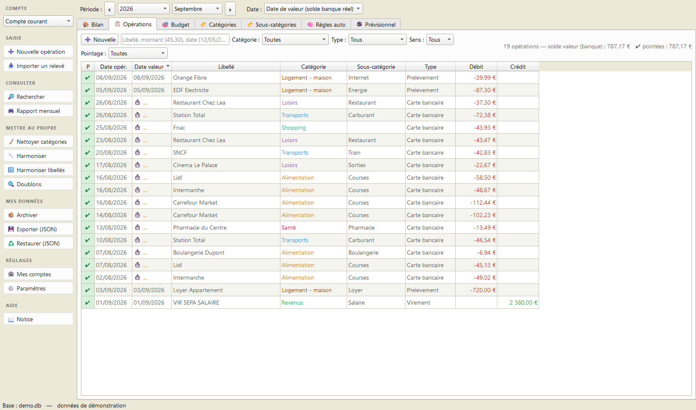
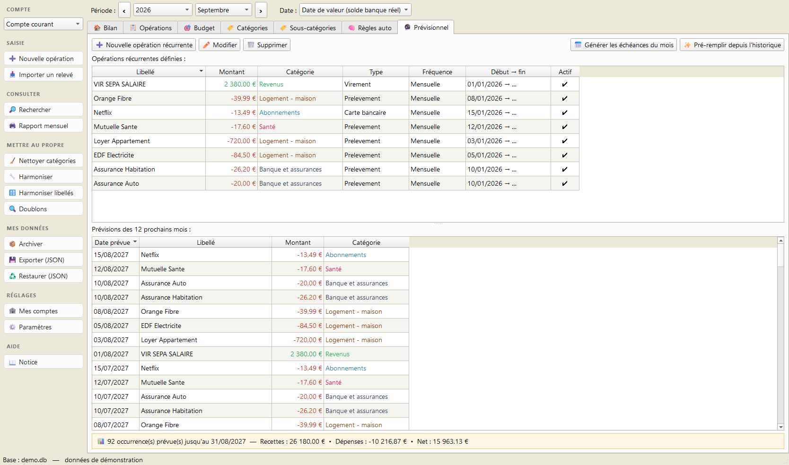

💰 Pécule
Gérez vos comptes et votre budget personnels, simplement, sur votre PC.
Gérez vos comptes et votre budget personnels, simplement, sur votre PC.




Captures avec des données d'exemple.
Une application de bureau pour suivre vos dépenses et revenus, vous fixer des budgets et garder l'œil sur votre solde réel — sans abonnement, sans compte en ligne, et sans qu'aucune donnée ne quitte votre ordinateur.
Saisie manuelle ou import de vos relevés bancaires au format CSV. Les colonnes sont reconnues par leur nom, quelle que soit la banque.
Des règles classent vos opérations toutes seules au fil des imports.
Un budget par catégorie, avec barres de progression vertes / oranges / rouges.
Déclarez vos opérations récurrentes (loyer, salaire, abonnements) et anticipez les mois à venir.
Créez d'un clic tout ce qui doit être débité ou encaissé dans le mois. L'import les complète ensuite avec la vraie ligne du relevé, sans doublon.
Une synthèse imprimable ou exportable en PDF, mois par mois.
Pointez vos opérations pour retrouver à l'euro près le solde de votre relevé.
L'encours de la carte est suivi à part : il n'entre dans votre solde bancaire qu'au jour du prélèvement, comme à la banque.
.zip.Pecule.exe.Aucune installation de Python n'est nécessaire. Au premier lancement, l'application vous invite à saisir votre solde de départ.
Configuration requise : Windows 10 ou 11 (64 bits).
⚠️ Au premier lancement, Windows affiche un avertissement. C'est normal, et voici comment le passer :

Ce message ne veut pas dire que le logiciel est dangereux. Il apparaît parce que l'application n'est pas signée numériquement : un certificat de signature coûte plusieurs centaines d'euros par an, difficile à justifier pour un logiciel gratuit. Windows prévient donc qu'il ne connaît pas l'éditeur — pas que le fichier pose problème. Le code source est entièrement consultable sur GitHub, et vous pouvez reconstruire l'exécutable vous-même.
Pécule lit les relevés exportés en CSV depuis l'espace client de votre banque. L'import n'est réservé à aucun établissement en particulier : les colonnes sont reconnues par leur nom. Il écarte les doublons, pointe les opérations déjà passées en banque, et complète les échéances que vous aviez inscrites d'avance au lieu de les dupliquer.
Toutes vos données restent sur votre ordinateur, dans un seul fichier
comptes.db — rangé dans votre dossier personnel, ou à côté de l'application
en usage portable. Rien n'est envoyé en ligne : l'application ne fait aucun accès
réseau, ne crée aucun compte et ne se connecte jamais à votre banque. Une sauvegarde
quotidienne automatique est créée dans un sous-dossier sauvegardes/.
Politique de confidentialité complète — quelles données sont traitées, où elles sont stockées, et comment tout effacer.